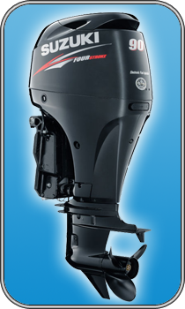

Suzuki DF 90

| Технические характеристики | |
|---|---|
| Тип двигателя | Четырехтактный DOHC, 16 клапанов |
| Длина дейдвуда | L/X (под транец 508/637 мм) |
| Вес, кг | 155 |
| Диаметр / ход поршня | 75 мм x 85 мм |
| Выбор винтов | 3 x 13 3/4-14 x 13-23 |
| Мощность, кВт (л.с.) | 66,2(90) |
| Число цилиндров | 4 (рядное расположение) |
| Рабочий объем, см3 | 1502 |
| Макс. число об/мин | 5300-6300 |
| Зажигание | Транзисторное |
| Система запуска | Электростартер |
| Положения переключателя передач | Передняя, нейтральная, задняя |
| Передаточное отношение | 2.59:1 |
| Рекомендуемый тип топлива | Бензин АИ-92 |
| Рекомендуемый тип масла | 10W-30, 10W-40 |
| Емкость топливного бака | 25 л (внешний) |
| Система подачи топлива | Многоточечный последовательный электронный впрыск |
| Подсос | Автоматический |
| Откидка мотора | Power Trim and Tilt |
| Система генератора | 12В, 27А |
| Система охлаждения | Жидкостная, незамкнутая |
| Управление мотором | Дистанционное |
| Возможность движения по мелководью | Есть |